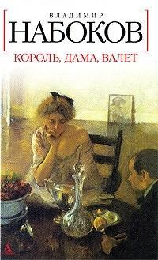

Roi, dame, valet - Vladimir Nabokov
1 - Mes notes au fur et à mesure de ma lecture
- Je suis difficilement entré dans la lecture, car j’ai eu du mal à comprendre le contexte, et l’histoire.
- J’ai tout de suite plu le livre car j’aime bien les contes initiatiques.
- J’ai retrouvé le parcours associé dans l’ouvrage, tout d’abord car il parle de triangle amoureux, de mensonges et de conscience, ce qui rentre donc dans le parcours associé.
2 - Mes citations
Je me suis souvent demandé, dit-elle, qui l'on connaît le mieux, de celui avec qui l'on a passé cinq heures dans la même pièce et celui que l'on a vu chaque jour pendant dix minutes un mois durant. |
Le pauvre Franz était écartelé entre la crainte que le mari remarquât quelque chose et le ravissement de sentir sourdre de la soie des étincelles qui lui parcouraient le corps. |
Un instant, il regretta de se séparer pour toujours de cette adorable et capricieuse dame aux yeux couleur de nerprun. |
Nous y voila, elle va encore m'embêter avec ses soucis d’épouse. |
Elle avait conscience de ne pouvoir être pleinement heureuse hors d'une certaine conjonction de la banque et du lit. |
3 - Mes impressions de lecture
- Dans cet ouvrage, nous pouvons retrouver des figures bibliques, comme par exemple Marthe peut être comparé à Marie Madeleine, tout d’abord par son nom qui est une dérivation, mais aussi car Marie Madeleine représente le vice, ce qui correspond très bien à Marthe.
- Les passages implicitement érotiques présents dans au long de cet ouvrage sont passés inaperçus par mon œil durant mes lectures, je ne les ai remarqués qu'à l'aide des cours en classe. Je trouve que pour l’époque c’est choquant, mais pour notre époque ce n’est pas forcément très choquant, de plus qu’il n’est pas facile de le comprendre si on n’a pas l'œil.
4 - Cercles de lecture en classe
- J’ai trouvé que le portrait de Franz était assez cliché parce qu’il est naïf et ignorant puis j’ai trouvé que Marthe était un peu hautaine, et pas forcément bien intentionnée, et j’ai trouvé que Dreyer inspirait la confiance et la bienveillance.
- Franz est bien le stéréotype du personnage car il est naïf et ignorant dans le domaine des sentiments puis il vient de la province et va à la capitale.
- Le regard de Franz est un regard envieux, intimidé et fasciné de l’amour qu’il ne connait pas.
- La scène des lunettes montre notamment le faite que Dreyer ne voit pas l’amour entre Franz et Marthe.
- Dreyer relook Franz car il doit être à la mode, surtout car Dreyer travaille dedans.
- Franz achète un appartement
- Marthe n’est pas satisfaite, elle est vicieuse.
- La planification de sa mort
5 - Travail d’analyse sur les couvertures russes, françaises et anglaises
- Dans la première couverture, ce qui a voulu être mis en avant est le désintéressement de Marthe vis à vis de Dreyer qu’on peut voir avec son expression faciale triste.
Dans la deuxième couverture, ce qui est représenté, est le vice, et le mensonge.
Dans la troisième couverture, la manipulation a été mise en avant.
Mais je ne comprends pas la 4e couverture.
- Je préfère la première couverture, car c’est une belle peinture détaillée.

- Pour la première, cela me fait penser au passage dans le théâtre où Marthe tient la main à Franz.